Introduction
The fifth part of JoJo's Bizarre Adventure is named Golden Wind! This series started in Weekly ShonEN Jump from December 1995 to April 1999. The year of 2018, part 5 recieved an adaption!
Who is Giorno Giovanna?
He is charismatic and determined individual with a strong sense of justice, demonstrating confidence, strategic thinking in battles, compassion for those in need, a moral code opposing cruelty, natural leadership qualities, and unwavering resilence in the face of challenges! But...Who son is this? Is he apart of the Joestar family? Who is his father?
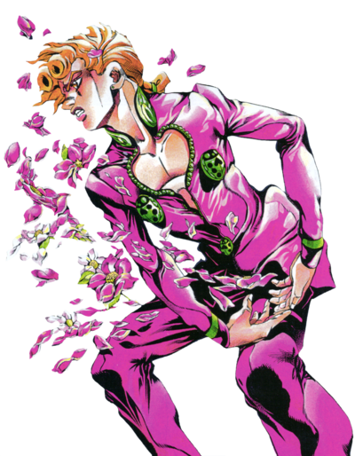Plot
The story takes place in the year of 2001, Italy. The story follows Giorno Giovanna and his dream to become a powerful gangster and bring justice to the corrupt Passione organization. Alongside his newly form allies to stop the mysterious and powerful boss of Passione, who goes great lengths to keep his identity hidden! We will see some familiar faces...new faces...
Major Characters
Giorno Giovanna

Bruno Bucciarati
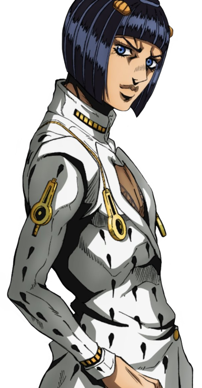Leone Abbaccihio
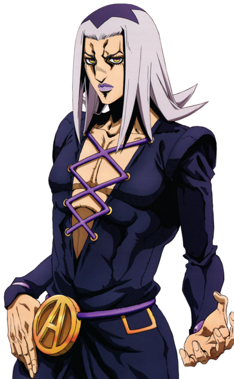Guido Mista
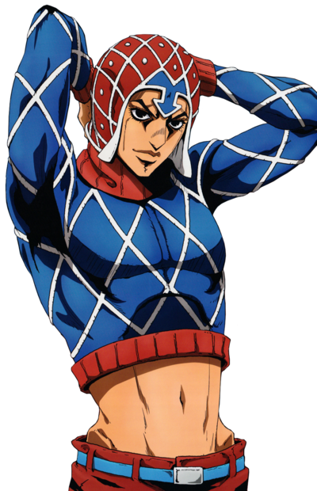Narancia Ghirga
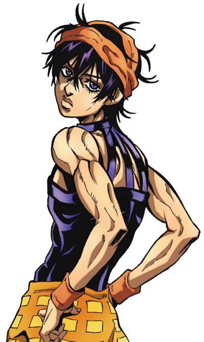Panacotta Fugo
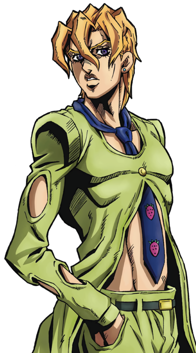Trish Una
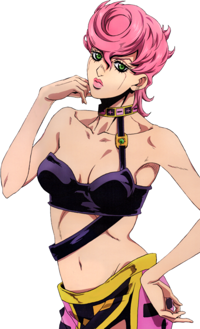Jotaro Kujo
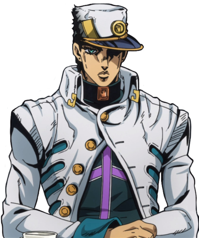The villian is a mystery...
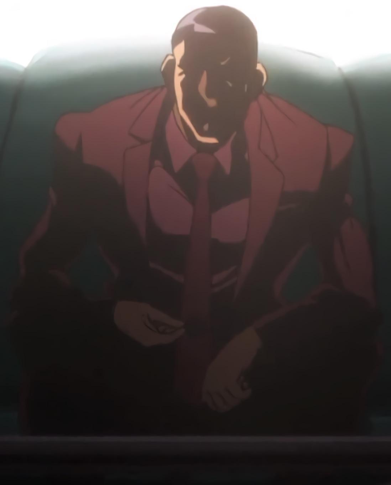References
Weekly Shonen Jump 1996 Issue #30 July 8, 1996
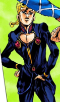Vogue Italia Junary 1992 M: Meghan Douglas Ph: Steven Meisel
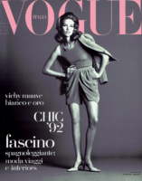Weekly Shonen Jump 1997 #48 November 10, 1997
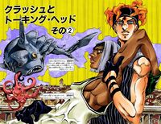Vogue Italia September 1997 M: Esther Canadas & Christina Kruse PH: Christophe Kutner
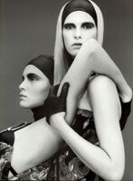